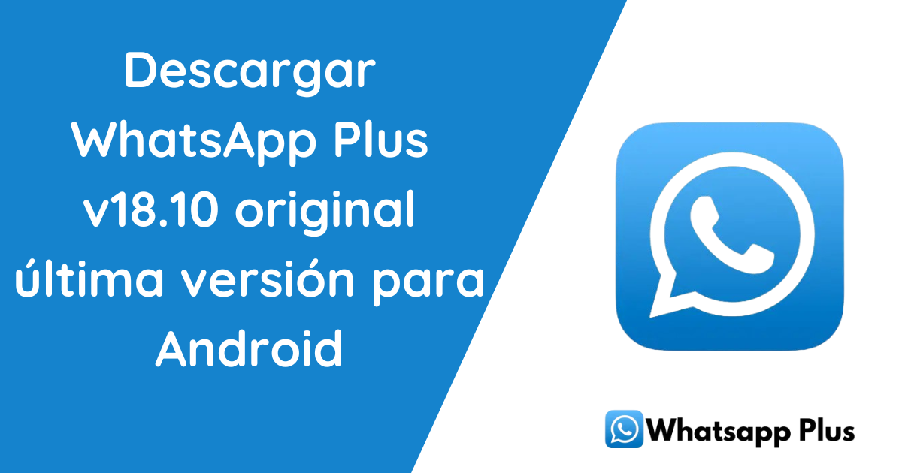

Descargar WhatsApp Plus Última Versión para Android
Si ya estás cansado del típico WhatsApp verde y básico que todos usamos, ¡te tengo buenas noticias! Existe una versión mejorada, más brillante y con más funciones llamada WhatsApp Plus Blue, y hoy te voy a contar todo sobre cómo descargar WhatsApp Plus última versión, qué tiene de diferente, y por qué deberías (o no) considerarlo para tu día a día. Prepárate para descubrir un mundo lleno de opciones que el WhatsApp tradicional no puede ofrecerte. Vamos allá.
Cansado de la versión tradicional de WhatsApp?
Si estás buscando una experiencia más emocionante y personalizada, entonces WhatsApp Plus es la solución perfecta para ti. No es solo una versión cualquiera; es la mejora que has estado esperando. Hoy te contaré todo lo que necesitas saber sobre cómo WhatsApp Plus última versión, qué lo hace tan especial y por qué podría ser el cambio que estabas buscando. Y claro, te lo explicaré de una forma sencilla, con un poco de humor para que no sea tan aburrido.
Qué es WhatsApp Plus?
Para empezar, WhatsApp Plus no es solo una versión modificada del WhatsApp normal. Es como si el WhatsApp que conocemos se hubiera ido de vacaciones, se relajara, y volviera con un montón de nuevas ideas y trucos. ¡Así es WhatsApp Plus! Tiene un enfoque más personalizado, con muchísimas opciones que el WhatsApp oficial no te ofrece.
Imagínate poder cambiar casi todo en la app, desde los temas, los colores, hasta los iconos, y además, con funciones que te dan más control sobre tu privacidad. En pocas palabras, WhatsApp Plus última versión es como el hermano mayor de WhatsApp, lleno de sorpresas y mejoras.
Cómo Descargar WhatsApp Plus Última Versión?
Ahora que te he convencido de probarlo, te estarás preguntando: "¿Y dónde lo descargo?". Bien, aquí hay una cosa importante que debes saber: WhatsApp Plus no está disponible en la Google Play Store. Lo siento, no lo encontrarás ahí. Como es una versión no oficial, tendrás que buscar el APK por tu cuenta en sitios de confianza. No te preocupes, te explicaré cómo hacerlo sin problema.
- Encuentra una fuente confiable: Hay muchos sitios web que ofrecen el APK de WhatsApp Plus última versión, pero debes tener cuidado de elegir uno que sea seguro y libre de malware. Nadie quiere terminar con un virus en su teléfono, ¿verdad?
- Descargar el APK: Una vez que encuentres una fuente confiable, simplemente haz clic en el enlace de descarga. El archivo APK comenzará a descargarse en tu dispositivo.
- Habilita la instalación desde fuentes desconocidas: Antes de instalarlo, es probable que tu teléfono te pida que habilites la opción de "Instalar apps de fuentes desconocidas". Esto es muy fácil de hacer; solo ve a "Ajustes" > "Seguridad" y activa esa opción.
- Instalar el APK: Ahora que has descargado el APK, simplemente ábrelo y sigue los pasos de instalación. Es tan fácil como instalar cualquier otra aplicación.
- Verifica tu número de teléfono: Igual que en WhatsApp normal, una vez que hayas instalado WhatsApp Plus, solo necesitas ingresar tu número de teléfono y verificarlo. ¡Y listo! Ya tienes WhatsApp Plus en tu dispositivo.
Qué Características Ofrece WhatsApp Plus Última Versión?
Seguramente te estás preguntando qué lo hace tan especial. ¿Qué puedes hacer con WhatsApp Plus última versión que no puedes hacer con el WhatsApp común? Aquí te dejo algunas de las mejores características que lo convierten en una opción increíble:
1. Personalización Total
Si te gusta darle un toque único a tus aplicaciones, WhatsApp Plus te permite hacer justo eso. Puedes elegir entre miles de temas creados por otros usuarios, cambiar los colores, los iconos, las fuentes, y prácticamente todo lo que quieras. Si te sientes más minimalista, puedes elegir un tema sencillo. Si eres más extravagante, también hay opciones para ti.
2. Mayor Control de Privacidad
Uno de los mayores problemas de WhatsApp es que todo el mundo sabe cuándo estás en línea, cuándo has leído un mensaje y cuándo estás escribiendo. A veces, simplemente no quieres que todos sepan lo que haces, ¿verdad? Con WhatsApp Plus, puedes ocultar el estado "En línea", el "Escribiendo..." y el doble check azul. ¡Es como ser un ninja de los mensajes!
3. Envío de Archivos Mejorado
Te ha pasado alguna vez que intentas enviar un video o una foto en WhatsApp y te aparece el molesto mensaje de "Archivo demasiado grande"? Pues eso no sucede con WhatsApp Plus última versión. Puedes enviar archivos de hasta 50 MB sin problemas, lo cual es perfecto si quieres compartir videos largos o archivos de alta calidad.
4. Más Emoticones
Sabemos que los emoticonos son una parte importante de la comunicación hoy en día. Con WhatsApp Plus, no solo tienes acceso a los emoticonos tradicionales de WhatsApp, sino que también puedes desbloquear muchos más. Desde emoticonos de otras apps hasta algunos completamente únicos, ¡la variedad es impresionante!
5. Temas Oscuros y Mucho Más
Te gusta el tema oscuro? WhatsApp Plus te permite activarlo fácilmente. No solo eso, puedes personalizarlo a tu gusto, haciendo que el tema oscuro sea aún más cool de lo que ya es.
Es Seguro Usar WhatsApp Plus?
Ahora, viene la pregunta importante: "¿Es seguro usar WhatsApp Plus?". Bueno, como toda aplicación no oficial, hay ciertos riesgos. Como mencioné antes, WhatsApp Plus no está respaldado por Meta (la compañía detrás de WhatsApp), lo que significa que técnicamente estás usando una versión no autorizada de la app.
En el pasado, algunos usuarios han sido baneados temporalmente por usar WhatsApp Plus. Sin embargo, la última versión de WhatsApp Plus viene con características anti-baneo que han mejorado mucho la seguridad. Aun así, es importante que estés al tanto de este riesgo antes de descargarlo.
Otro aspecto a tener en cuenta es que, al no ser una app oficial, debes asegurarte de descargarla solo desde sitios confiables para evitar malware o virus en tu dispositivo. ¡No querrás que tu teléfono se convierta en un imán de problemas!
Ventajas y Desventajas de WhatsApp Plus Última Versión
Ventajas:
- Personalización total: Cambia colores, temas, y más.
- Mayor control de privacidad: Oculta el estado "En línea" y el "Escribiendo".
- Envío de archivos más grandes.
- Mayor variedad de emoticonos.
- Anti-baneo (aunque no al 100%).
Desventajas:
- Posible riesgo de baneo por parte de WhatsApp.
- Debes descargarla desde sitios externos, lo que puede ser peligroso si no tienes cuidado.
- No es una app oficial, por lo que no tiene soporte oficial.
Conclusión
En resumen, WhatsApp Plus última versión es una excelente alternativa para quienes buscan más personalización y control sobre su experiencia de mensajería. Si te gusta la idea de modificar los temas, ocultar tu estado en línea y enviar archivos más grandes, entonces definitivamente vale la pena probarlo.
Solo recuerda, como es una aplicación no oficial, debes tener cuidado al descargarla y usarla. Si estás dispuesto a correr el pequeño riesgo de ser baneado, entonces ¡adelante! Disfruta de todas las ventajas que WhatsApp Plus tiene para ofrecer.